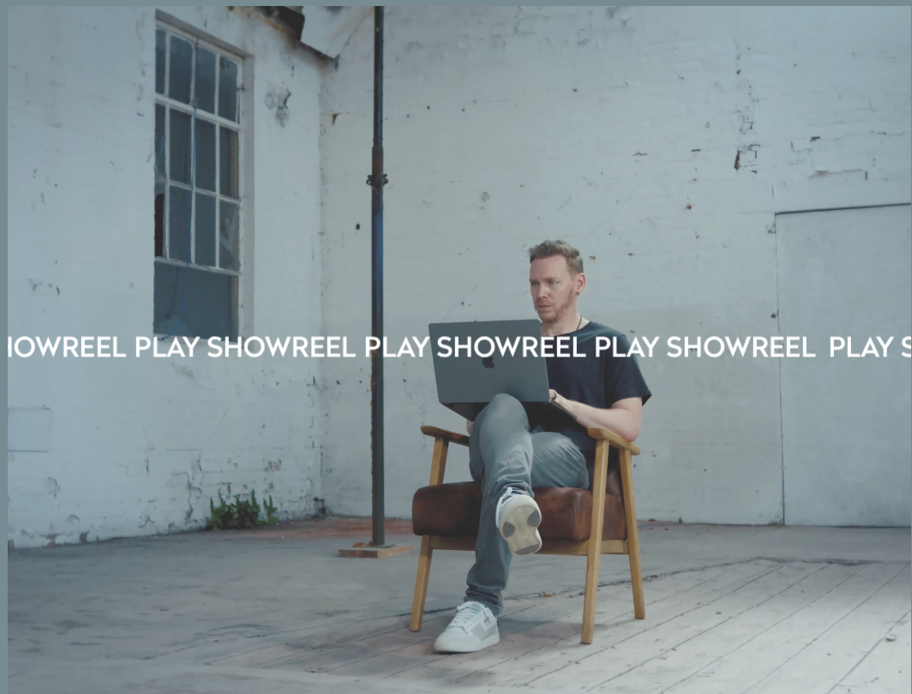

05
Primary Goal
What is your impression of the intended primary goal of the interactive experience?
The primary goal is to communicate Rich Brown's creative identity and professional capability through a curated digital portfolio. The design presents his work in an accessible, visually engaging way that informs and persuades potential collaborators or employers.